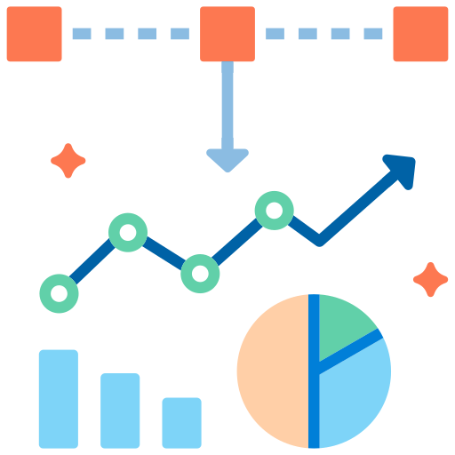

Our Services

Data Analysis
Using exploratory data analysis, hypothesis testing, and regression modeling, I identify key factors and relationships within the data. By applying statistical techniques and data-driven methodologies, I uncover hidden patterns, outliers, and anomalies that provide valuable insights for businesses.

Machine Learning
From traditional algorithms like linear regression and decision trees to advanced techniques such as neural networks and ensemble methods, I employ a range of machine learning approaches to address diverse business challenges. I carefully select and engineer features, perform model training and evaluation, and fine-tune the models to achieve optimal performance.

Data Visualization
Using tools such as Tableau, matplotlib, and D3.js, I create interactive and visually appealing charts, graphs, and dashboards. By combining design principles, storytelling techniques, and an understanding of human perception, I ensure that the visualizations effectively communicate the key messages hidden within the data.